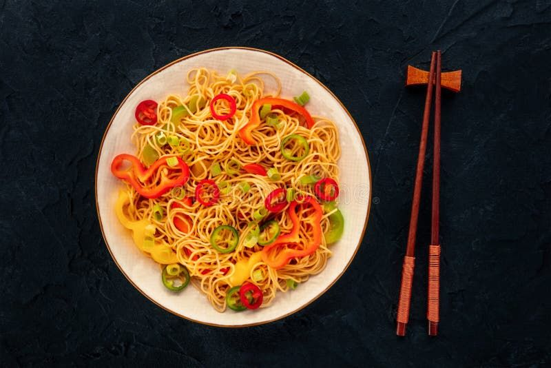

Home
Veg Hakka Noodles

Veg Hakka Noodles is a delicious Indo-Chinese dish made
with noodles, fresh vegetables, and flavorful sauces.
It is quick to prepare and perfect for lunch or dinner.
Recipe Information
- Preparation Time: 15 minutes
- Cooking Time: 15 minutes
- Total Time: 30 minutes
- Servings: 2 people
- Difficulty: Easy
Ingredients
- 200 grams noodles
- 1 medium-sized onion, thinly sliced
- 1 small capsicum, thinly sliced
- 1 small carrot, julienned
- 1/2 cup shredded cabbage
- 2 tablespoons cooking oil
- 1 tablespoon soy sauce
- 1 tablespoon red chilli sauce
- 1 teaspoon vinegar
- 1 teaspoon finely chopped garlic
- Salt to taste
- 1/2 teaspoon black pepper
- Spring onions for garnishing (optional)
Instructions
-
Boil the noodles:
Boil water in a pan, add the noodles, and cook
according to the packet instructions. Drain and rinse
with cold water. Add a little oil to prevent sticking.
-
Prepare the vegetables:
Wash and thinly slice the onion, capsicum, carrot,
and cabbage.
-
Heat the oil:
Heat oil in a wok or large pan. Add chopped garlic
and sauté for a few seconds.
-
Cook the vegetables:
Add onion, carrot, capsicum, and cabbage.
Stir-fry on high heat for 2–3 minutes so the
vegetables remain slightly crunchy.
-
Add sauces:
Add soy sauce, red chilli sauce, vinegar, black
pepper, and salt. Mix everything well.
-
Add the noodles:
Add the boiled noodles to the pan and toss gently
until the noodles are evenly coated with the sauces.
-
Garnish and serve:
Cook for another 1–2 minutes. Garnish with spring
onions and serve hot.
Serving Suggestions
Serve hot Veg Hakka Noodles with chilli paneer,
manchurian, or your favourite dipping sauce.
Tips for Perfect Noodles
- Do not overcook the noodles.
- Use high heat for a restaurant-style flavour.
- Keep the vegetables slightly crunchy.
- Adjust the sauces and spices according to your taste.
Enjoy Your Homemade Noodles!
Fresh, spicy, and delicious noodles are ready to eat.